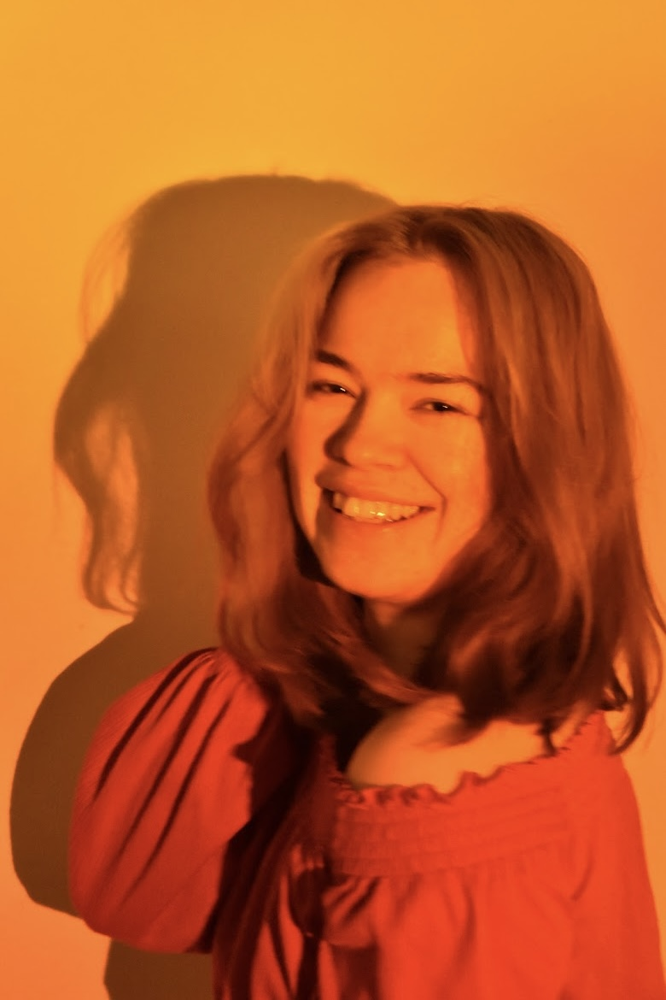

Hello!
I'm Emma. I am born and raised in Luxembourg, currently based in Västerås, and I have always been drawn to the space where creativity meets business.
This interest led me to a digitally creative program at Hyper Island where I got hooked on web design (UX/UI), business strategy and project management. I also have a passion for content writing and a general love for people and managing relations.